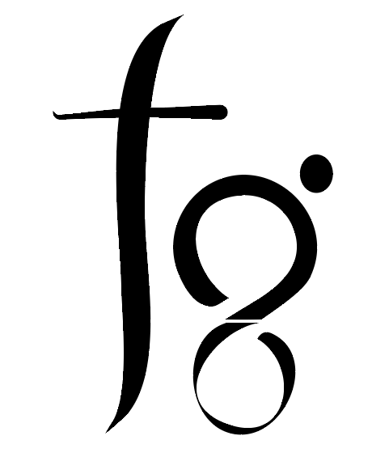

Thamme Gowda
Email: tg@isi.edu | Twitter: @thammegowda | Github: @thammegowda4676 Admiralty Way #1001, Marina del Rey, CA 90292, USA
IPA: θʌmme gaʊdʌ | Kannada: ತಮ್ಮೇ ಗೌಡ | Telugu: తమ్మే గౌడ | Devanagari: तम्मे गौड

I am a Research Programmer in the NLP Group at USC ISI.
In addition, I am pursuing Ph.D. at the Computer Science Departmemnt. I am fortunate to be mentored by Dr. Jonathan May.
My first neural MT system composed a sentence starting with 'In the Summer of World War Translation'..., I still have no idea what it meant. I will find a new task in AI ( or go back to do farming in my village, with robots) when mine or somebody's machine translator beats my translation of this poem , and generalizes well for other such languages.
Quote : "... ಸರ್ವರೊಳು ಒಂದೊಂದು ನುಡಿಗಲಿತು, ವಿದ್ಯೆಯ ಪರ್ವತವೆ ಆದ." - ಸರ್ವಜ್ಞ (16th century)
... by learning one word of wisdom from each, he became a mountain of knowledge.
In the past, I had worked with these amazing people from industry, academia, research labs, start-ups, and open source communities:
... by learning one word of wisdom from each, he became a mountain of knowledge.
- 2016 - 2017 : Data scientist intern at NASA JPL (worked with Paul Ramirez, and Dr. Kiri Wagstaff )
- 2016 - 2017 : Research assistant at USC Information Retrieval and Data Science (worked with Dr. Chris Mattmann )
- 2013 - 2015 : Co-founder of Datoin.com (with Rakshit, Umar, and Monis)
- 2012 - 2014 : Full stack engineer at Simplyphi.com
- 2016 - Present : Committer and Project Management Committee member at Apache Software Foundation.
- 2017 (Summer) : Google Summer of Code 2017 Mentor for Apache Tika.
My first neural MT system composed a sentence starting with 'In the Summer of World War Translation'..., I still have no idea what it meant. I will find a new task in AI ( or go back to do farming in my village, with robots) when mine or somebody's machine translator beats my translation of this poem , and generalizes well for other such languages.
Publications
2018
- K. Wagstaff, R. Francis, T. Gowda, Y. Lu, E. Riloff, K. Singh, and N. Lanza. Mars Target Encyclopedia: Rock and Soil Composition Extracted from the Literature. Proceedings of 2018 AAAI Thirtieth Annual Conference on Innovative Applications of Artificial Intelligence, 2018. Get PDF
- K. Wagstaff, Y. Lu, A. Stanboli, K. Grimes, T. Gowda, and J. Padams. Deep Mars: CNN Classification of Mars Imagery for the PDS Imaging Atlas. Proceedings of 2018 AAAI Thirtieth Annual Conference on Innovative Applications of Artificial Intelligence, 2018. Get PDF
- K. Hundman, T. Gowda, M. Kejriwal, and B. Boecking Always Lurking: Understanding and Mitigating Bias in Online Human Trafficking Detection. 2018 AAAI 1st Conference on Artificial Intelligence, Ethics, and Society, 2018. Get PDF
2017
- T. Gowda, K. Hundman, and C. Mattmann. An Approach for Automatic and Large Scale Image Forensics. Proceedings of Multimedia Forensics and Security Workshop, Bucharest, Romania, June 2017. Get PDF
- K. L. Wagstaff, R. Francis, T. Gowda, Y. Lu, E. Riloff, and K. Singh. Mars Target Encyclopedia: Information Extraction for Planetary Science. Third Planetary Workshop, Flagstaff, Arizona, USA, June 2017. Get PDF
2016
- T. Gowda and C. Mattmann. Clustering Web Pages Based on Structure and Style Similarity. Proceedings of IEEE International Conference on Information Reuse and Integration, Pittsburgh, Pennsylvania, USA, July 28-30, 2016. Get PDF
- C. Mattmann, G. Yang, H. Manjunatha, T. Gowda, A. J. Zhou, J. Lou, L. McGibbney. Multimedia Metadata-based Forensics in Human Trafficking Web Data . Proceedings of the Workshop on Search and Exploration of X-Rated Information (SEXI) - 9th ACM International Conference on Web Search and Data Mining, San Francisco, California, USA. February, 2016. Get PDF
Software Engineering
My happiest moment was when a stranger at a conference said, 'thanks for writing that code and making it open'. Selected projects:- Sparkler - Crawler on Apache Spark. Even the Google's query n-grams too has tied it to my name.
- Named Entity Recognition in Apache Tika. CoreNLP has shared a back link to this work.
- Object Recognition in Apache Tika.
I used to post answers on stackoverflow.com (when I faced problems unsolved by anyone else.) See my profile here